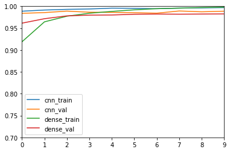

Neural Networks beyond scikit-learn¶
import numpy as np
import matplotlib.pyplot as plt
% matplotlib inline
plt.rcParams["savefig.dpi"] = 300
plt.rcParams["savefig.bbox"] = "tight"
np.set_printoptions(precision=3, suppress=True)
import pandas as pd
from sklearn.model_selection import train_test_split, cross_val_score
from sklearn.pipeline import make_pipeline
from sklearn.preprocessing import scale, StandardScaler
from keras.datasets import mnist
import keras
(X_train, y_train), (X_test, y_test) = mnist.load_data()
Using TensorFlow backend.
fig, axes = plt.subplots(1, 5, figsize=(12, 3))
for i, ax in enumerate(axes.ravel()):
ax.imshow(X_train[i, :, :], cmap='gray_r')
ax.set_xticks(())
ax.set_yticks(())
plt.savefig("images/mnist_org.png")

rng = np.random.RandomState(42)
perm = rng.permutation(28 * 28)
perm
array([598, 590, 209, 637, 174, 213, 429, 259, 593, 204, 576, 244, 235,
218, 770, 155, 516, 67, 579, 109, 66, 522, 78, 473, 23, 211,
706, 445, 644, 39, 332, 86, 137, 653, 656, 442, 525, 515, 334,
630, 342, 780, 118, 652, 260, 779, 352, 432, 77, 691, 483, 682,
49, 518, 168, 326, 377, 375, 568, 309, 629, 30, 361, 33, 31,
627, 558, 405, 254, 412, 739, 486, 266, 331, 422, 231, 333, 357,
620, 265, 54, 735, 514, 97, 506, 294, 234, 749, 311, 351, 120,
436, 84, 10, 624, 464, 192, 530, 199, 29, 470, 323, 65, 350,
659, 239, 81, 485, 291, 487, 264, 715, 535, 519, 76, 388, 523,
570, 72, 693, 409, 208, 585, 63, 314, 672, 302, 750, 363, 393,
752, 367, 705, 7, 533, 101, 428, 765, 745, 2, 398, 527, 764,
196, 641, 729, 493, 448, 215, 425, 581, 417, 79, 148, 335, 247,
559, 762, 133, 648, 55, 411, 597, 675, 545, 617, 720, 296, 362,
60, 741, 360, 440, 662, 426, 383, 327, 584, 286, 90, 382, 181,
443, 618, 158, 69, 446, 131, 44, 70, 210, 340, 300, 275, 135,
740, 165, 164, 28, 639, 193, 220, 534, 306, 136, 521, 299, 140,
457, 6, 611, 478, 73, 250, 778, 145, 281, 290, 434, 132, 771,
539, 734, 615, 41, 477, 108, 628, 56, 292, 704, 394, 227, 212,
583, 319, 24, 467, 733, 336, 365, 544, 110, 82, 51, 465, 731,
718, 632, 198, 549, 687, 499, 482, 479, 139, 444, 420, 18, 649,
328, 83, 61, 572, 431, 182, 481, 223, 433, 451, 381, 453, 721,
746, 176, 536, 626, 163, 248, 507, 696, 74, 616, 713, 104, 114,
424, 92, 395, 89, 751, 495, 728, 609, 594, 11, 338, 43, 42,
167, 689, 603, 396, 178, 688, 529, 177, 543, 726, 257, 344, 456,
15, 606, 256, 355, 517, 324, 462, 708, 356, 329, 605, 9, 249,
22, 221, 537, 676, 768, 439, 657, 203, 237, 93, 680, 346, 490,
284, 184, 636, 380, 153, 75, 512, 277, 68, 494, 188, 271, 236,
88, 667, 117, 125, 736, 289, 238, 0, 775, 368, 743, 450, 278,
776, 116, 228, 634, 404, 677, 274, 318, 541, 144, 497, 678, 711,
575, 369, 268, 557, 307, 310, 782, 46, 349, 371, 513, 261, 195,
783, 658, 107, 59, 589, 423, 100, 660, 703, 633, 586, 179, 304,
761, 650, 755, 149, 124, 623, 683, 185, 531, 50, 500, 773, 722,
321, 353, 724, 142, 370, 141, 399, 511, 320, 19, 172, 640, 312,
390, 730, 12, 407, 408, 305, 354, 25, 587, 169, 38, 175, 245,
298, 654, 416, 538, 272, 601, 154, 126, 449, 716, 341, 430, 287,
113, 501, 173, 359, 774, 57, 542, 222, 280, 17, 127, 322, 255,
528, 588, 468, 753, 190, 115, 695, 645, 94, 180, 301, 571, 580,
551, 548, 694, 532, 5, 769, 45, 710, 157, 595, 171, 16, 48,
759, 719, 3, 567, 554, 316, 552, 480, 447, 723, 283, 96, 285,
526, 225, 26, 631, 263, 437, 364, 229, 37, 754, 374, 469, 756,
668, 582, 194, 670, 679, 503, 758, 655, 757, 162, 604, 152, 547,
742, 602, 111, 226, 651, 103, 421, 419, 119, 53, 151, 403, 738,
207, 767, 608, 8, 638, 36, 452, 253, 303, 596, 569, 635, 262,
297, 414, 150, 625, 698, 550, 488, 147, 146, 578, 727, 591, 348,
463, 325, 186, 123, 669, 143, 748, 197, 279, 293, 400, 122, 183,
202, 438, 246, 415, 697, 129, 402, 621, 613, 712, 219, 714, 599,
717, 610, 386, 760, 509, 267, 685, 441, 496, 112, 232, 684, 607,
373, 233, 622, 317, 410, 709, 358, 258, 282, 376, 384, 224, 744,
643, 472, 347, 505, 772, 725, 707, 619, 671, 664, 556, 577, 85,
242, 159, 524, 35, 540, 170, 673, 665, 737, 95, 563, 240, 574,
460, 553, 690, 206, 392, 397, 666, 217, 4, 642, 701, 612, 546,
98, 573, 406, 502, 47, 32, 200, 134, 27, 692, 230, 489, 378,
288, 418, 674, 391, 592, 498, 138, 62, 471, 647, 128, 763, 520,
64, 14, 156, 40, 492, 379, 187, 216, 52, 337, 295, 251, 461,
455, 781, 269, 201, 161, 555, 401, 702, 476, 105, 565, 389, 1,
732, 561, 80, 205, 34, 508, 427, 454, 366, 91, 339, 564, 345,
241, 13, 315, 600, 387, 273, 166, 777, 646, 484, 766, 504, 243,
566, 562, 686, 189, 699, 475, 681, 510, 58, 474, 560, 747, 252,
21, 313, 459, 160, 276, 191, 385, 413, 491, 343, 308, 661, 130,
663, 99, 372, 87, 458, 330, 214, 466, 121, 614, 20, 700, 71,
106, 270, 435, 102])
X_train.shape
(60000, 28, 28)
X_train_perm = X_train.reshape(-1, 28 * 28)[:, perm].reshape(-1, 28, 28)
X_test_perm = X_test.reshape(-1, 28 * 28)[:, perm].reshape(-1, 28, 28)
fig, axes = plt.subplots(1, 5, figsize=(12, 3))
for i, ax in enumerate(axes.ravel()):
ax.imshow(X_train_perm[i, :, :], cmap='gray_r')
ax.set_xticks(())
ax.set_yticks(())
plt.savefig("images/mnist_permuted.png")

Densly connected networks¶
from keras.models import Sequential
from keras.layers import Dense, Activation
model = Sequential([
Dense(512, input_shape=(784,), activation='relu'),
Dense(10, activation='softmax'),
])
model.compile("adam", "categorical_crossentropy", metrics=['accuracy'])
history_callback_dense = model.fit(X_train.reshape(-1, 28 * 28) / 255, y_train, batch_size=128,
epochs=10, verbose=1, validation_split=.1)
Train on 54000 samples, validate on 6000 samples
Epoch 1/10
54000/54000 [==============================] - 4s 81us/step - loss: 0.2880 - acc: 0.9188 - val_loss: 0.1333 - val_acc: 0.9613
Epoch 2/10
54000/54000 [==============================] - 4s 78us/step - loss: 0.1194 - acc: 0.9644 - val_loss: 0.0994 - val_acc: 0.9715
Epoch 3/10
54000/54000 [==============================] - 5s 87us/step - loss: 0.0768 - acc: 0.9772 - val_loss: 0.0816 - val_acc: 0.9780
Epoch 4/10
54000/54000 [==============================] - 4s 76us/step - loss: 0.0542 - acc: 0.9840 - val_loss: 0.0721 - val_acc: 0.9797
Epoch 5/10
54000/54000 [==============================] - 4s 73us/step - loss: 0.0408 - acc: 0.9882 - val_loss: 0.0675 - val_acc: 0.9800
Epoch 6/10
54000/54000 [==============================] - 4s 79us/step - loss: 0.0303 - acc: 0.9918 - val_loss: 0.0674 - val_acc: 0.9817
Epoch 7/10
54000/54000 [==============================] - 4s 70us/step - loss: 0.0217 - acc: 0.9945 - val_loss: 0.0669 - val_acc: 0.9822
Epoch 8/10
54000/54000 [==============================] - 4s 75us/step - loss: 0.0168 - acc: 0.9957 - val_loss: 0.0703 - val_acc: 0.9818
Epoch 9/10
54000/54000 [==============================] - 5s 90us/step - loss: 0.0125 - acc: 0.9971 - val_loss: 0.0670 - val_acc: 0.9822
Epoch 10/10
54000/54000 [==============================] - 4s 79us/step - loss: 0.0101 - acc: 0.9980 - val_loss: 0.0651 - val_acc: 0.9825
model.summary()
_________________________________________________________________
Layer (type) Output Shape Param #
=================================================================
dense_7 (Dense) (None, 512) 401920
_________________________________________________________________
dense_8 (Dense) (None, 10) 5130
=================================================================
Total params: 407,050
Trainable params: 407,050
Non-trainable params: 0
_________________________________________________________________
batch_size = 128
num_classes = 10
epochs = 12
# input image dimensions
img_rows, img_cols = 28, 28
# the data, shuffled and split between train and test sets
X_train_images = X_train.reshape(X_train.shape[0], img_rows, img_cols, 1) / 255
X_test_images = X_test.reshape(X_test.shape[0], img_rows, img_cols, 1) / 255
input_shape = (img_rows, img_cols, 1)
y_train = keras.utils.to_categorical(y_train, num_classes)
y_test = keras.utils.to_categorical(y_test, num_classes)
from keras.layers import Conv2D, MaxPooling2D, Flatten
num_classes = 10
cnn = Sequential()
cnn.add(Conv2D(32, kernel_size=(3, 3),
activation='relu',
input_shape=input_shape))
cnn.add(MaxPooling2D(pool_size=(2, 2)))
cnn.add(Conv2D(32, (3, 3), activation='relu'))
cnn.add(MaxPooling2D(pool_size=(2, 2)))
cnn.add(Flatten())
cnn.add(Dense(64, activation='relu'))
cnn.add(Dense(num_classes, activation='softmax'))
cnn.compile("adam", "categorical_crossentropy", metrics=['accuracy'])
history_cnn = cnn.fit(X_train_images, y_train,
batch_size=128, epochs=10, verbose=1, validation_split=.1)
Train on 54000 samples, validate on 6000 samples
Epoch 1/10
54000/54000 [==============================] - 32s 598us/step - loss: 0.0367 - acc: 0.9887 - val_loss: 0.0655 - val_acc: 0.9838
Epoch 2/10
54000/54000 [==============================] - 28s 522us/step - loss: 0.0256 - acc: 0.9914 - val_loss: 0.0597 - val_acc: 0.9855
Epoch 3/10
54000/54000 [==============================] - 27s 504us/step - loss: 0.0231 - acc: 0.9929 - val_loss: 0.0529 - val_acc: 0.9888
Epoch 4/10
54000/54000 [==============================] - 26s 489us/step - loss: 0.0190 - acc: 0.9938 - val_loss: 0.0665 - val_acc: 0.9863
Epoch 5/10
54000/54000 [==============================] - 27s 498us/step - loss: 0.0122 - acc: 0.9957 - val_loss: 0.0585 - val_acc: 0.9860
Epoch 6/10
54000/54000 [==============================] - 28s 520us/step - loss: 0.0144 - acc: 0.9953 - val_loss: 0.0704 - val_acc: 0.9852
Epoch 7/10
54000/54000 [==============================] - 27s 493us/step - loss: 0.0180 - acc: 0.9944 - val_loss: 0.0847 - val_acc: 0.9842
Epoch 8/10
54000/54000 [==============================] - 27s 507us/step - loss: 0.0136 - acc: 0.9958 - val_loss: 0.0712 - val_acc: 0.9892
Epoch 9/10
54000/54000 [==============================] - 31s 570us/step - loss: 0.0119 - acc: 0.9962 - val_loss: 0.0789 - val_acc: 0.9873
Epoch 10/10
54000/54000 [==============================] - 28s 525us/step - loss: 0.0096 - acc: 0.9970 - val_loss: 0.0610 - val_acc: 0.9887
cnn.summary()
_________________________________________________________________
Layer (type) Output Shape Param #
=================================================================
conv2d_1 (Conv2D) (None, 26, 26, 32) 320
_________________________________________________________________
max_pooling2d_1 (MaxPooling2 (None, 13, 13, 32) 0
_________________________________________________________________
conv2d_2 (Conv2D) (None, 11, 11, 32) 9248
_________________________________________________________________
max_pooling2d_2 (MaxPooling2 (None, 5, 5, 32) 0
_________________________________________________________________
flatten_1 (Flatten) (None, 800) 0
_________________________________________________________________
dense_9 (Dense) (None, 64) 51264
_________________________________________________________________
dense_10 (Dense) (None, 10) 650
=================================================================
Total params: 61,482
Trainable params: 61,482
Non-trainable params: 0
_________________________________________________________________
def plot_history(logger):
df = pd.DataFrame(logger.history)
df[['acc', 'val_acc']].plot()
plt.ylabel("accuracy")
#df[['loss', 'val_loss']].plot(linestyle='--', ax=plt.twinx())
#plt.ylabel("loss")
plot_history(history_cnn)

plot_history(history_callback_dense)

history_callback_dense_shuffle = model.fit(X_train_perm.reshape(-1, 28 * 28) / 255, y_train, batch_size=128,
epochs=10, verbose=1, validation_split=.1)
Train on 54000 samples, validate on 6000 samples
Epoch 1/10
54000/54000 [==============================] - 7s 123us/step - loss: 0.2447 - acc: 0.9299 - val_loss: 0.0969 - val_acc: 0.9727
Epoch 2/10
54000/54000 [==============================] - 6s 103us/step - loss: 0.0884 - acc: 0.9736 - val_loss: 0.0857 - val_acc: 0.9765
Epoch 3/10
54000/54000 [==============================] - 5s 96us/step - loss: 0.0593 - acc: 0.9829 - val_loss: 0.0760 - val_acc: 0.9782
Epoch 4/10
54000/54000 [==============================] - 5s 97us/step - loss: 0.0430 - acc: 0.9879 - val_loss: 0.0693 - val_acc: 0.9802
Epoch 5/10
54000/54000 [==============================] - 6s 109us/step - loss: 0.0312 - acc: 0.9916 - val_loss: 0.0680 - val_acc: 0.9795
Epoch 6/10
54000/54000 [==============================] - 6s 112us/step - loss: 0.0237 - acc: 0.9939 - val_loss: 0.0679 - val_acc: 0.9795
Epoch 7/10
54000/54000 [==============================] - 6s 111us/step - loss: 0.0180 - acc: 0.9958 - val_loss: 0.0644 - val_acc: 0.9812
Epoch 8/10
54000/54000 [==============================] - 6s 114us/step - loss: 0.0129 - acc: 0.9978 - val_loss: 0.0657 - val_acc: 0.9820
Epoch 9/10
54000/54000 [==============================] - 6s 115us/step - loss: 0.0098 - acc: 0.9981 - val_loss: 0.0690 - val_acc: 0.9815
Epoch 10/10
54000/54000 [==============================] - 6s 109us/step - loss: 0.0080 - acc: 0.9986 - val_loss: 0.0692 - val_acc: 0.9808
cnn.compile("adam", "categorical_crossentropy", metrics=['accuracy'])
X_train_images_perm = X_train_perm.reshape(X_train_perm.shape[0], img_rows, img_cols, 1) / 255
history_cnn_perm = cnn.fit(X_train_images_perm, y_train,
batch_size=128, epochs=10, verbose=1, validation_split=.1)
Train on 54000 samples, validate on 6000 samples
Epoch 1/10
54000/54000 [==============================] - 28s 522us/step - loss: 0.9967 - acc: 0.6817 - val_loss: 0.3969 - val_acc: 0.8807
Epoch 2/10
54000/54000 [==============================] - 26s 490us/step - loss: 0.3973 - acc: 0.8775 - val_loss: 0.3066 - val_acc: 0.9085
Epoch 3/10
54000/54000 [==============================] - 29s 534us/step - loss: 0.3189 - acc: 0.9010 - val_loss: 0.2438 - val_acc: 0.9253
Epoch 4/10
54000/54000 [==============================] - 26s 473us/step - loss: 0.2736 - acc: 0.9157 - val_loss: 0.2111 - val_acc: 0.9400
Epoch 5/10
54000/54000 [==============================] - 28s 516us/step - loss: 0.2436 - acc: 0.9257 - val_loss: 0.2163 - val_acc: 0.9307
Epoch 6/10
54000/54000 [==============================] - 25s 465us/step - loss: 0.2244 - acc: 0.9313 - val_loss: 0.1826 - val_acc: 0.9413
Epoch 7/10
54000/54000 [==============================] - 28s 525us/step - loss: 0.2073 - acc: 0.9359 - val_loss: 0.1847 - val_acc: 0.9417
Epoch 8/10
54000/54000 [==============================] - 30s 558us/step - loss: 0.1947 - acc: 0.9390 - val_loss: 0.1714 - val_acc: 0.9443
Epoch 9/10
54000/54000 [==============================] - 28s 516us/step - loss: 0.1822 - acc: 0.9436 - val_loss: 0.1710 - val_acc: 0.9452
Epoch 10/10
54000/54000 [==============================] - 35s 656us/step - loss: 0.1715 - acc: 0.9461 - val_loss: 0.1639 - val_acc: 0.9492
cnn = pd.DataFrame(history_cnn.history)
dense = pd.DataFrame(history_callback_dense.history)
dense_perm = pd.DataFrame(history_callback_dense_shuffle.history)
cnn_perm = pd.DataFrame(history_cnn_perm.history)
res_org = pd.DataFrame({'cnn_train': cnn.acc, 'cnn_val': cnn.val_acc, 'dense_train': dense.acc, 'dense_val': dense.val_acc})
res_org.plot()
plt.ylim(.7, 1)
plt.savefig("images/mnist_org_curve.png")

res_perm = pd.DataFrame({'cnn_train': cnn_perm.acc, 'cnn_val': cnn_perm.val_acc, 'dense_train': dense_perm.acc, 'dense_val': dense_perm.val_acc})
res_perm.plot()
plt.ylim(.7, 1)
plt.savefig("images/mnist_perm_curve.png")

from keras.layers import Input, Conv2D, MaxPooling2D, Flatten
from keras.models import Model
num_classes = 10
inputs = Input(shape=(28, 28, 1))
conv1_1 = Conv2D(32, kernel_size=(3, 3),
activation='relu', padding='same')(inputs)
conv1_2 = Conv2D(32, kernel_size=(3, 3),
activation='relu', padding='same')(conv1_1)
conv1_3 = Conv2D(32, kernel_size=(3, 3),
activation='relu', padding='same')(conv1_2)
maxpool1 = MaxPooling2D(pool_size=(2, 2))(conv1_3)
conv2_1 = Conv2D(32, (3, 3), activation='relu', padding='same')(maxpool1)
conv2_2 = Conv2D(32, (3, 3), activation='relu', padding='same')(conv2_1)
conv2_3 = Conv2D(32, (3, 3), activation='relu', padding='same')(conv2_2)
maxpool2 = MaxPooling2D(pool_size=(2, 2))(conv2_3)
flat = Flatten()(maxpool2)
dense = Dense(64, activation='relu')(flat)
predictions = Dense(num_classes, activation='softmax')(dense)
model = Model(inputs=inputs, outputs=predictions)
model.summary()
_________________________________________________________________
Layer (type) Output Shape Param #
=================================================================
input_10 (InputLayer) (None, 28, 28, 1) 0
_________________________________________________________________
conv2d_34 (Conv2D) (None, 28, 28, 32) 320
_________________________________________________________________
conv2d_35 (Conv2D) (None, 28, 28, 32) 9248
_________________________________________________________________
conv2d_36 (Conv2D) (None, 28, 28, 32) 9248
_________________________________________________________________
max_pooling2d_15 (MaxPooling (None, 14, 14, 32) 0
_________________________________________________________________
conv2d_37 (Conv2D) (None, 14, 14, 32) 9248
_________________________________________________________________
conv2d_38 (Conv2D) (None, 14, 14, 32) 9248
_________________________________________________________________
conv2d_39 (Conv2D) (None, 14, 14, 32) 9248
_________________________________________________________________
max_pooling2d_16 (MaxPooling (None, 7, 7, 32) 0
_________________________________________________________________
flatten_8 (Flatten) (None, 1568) 0
_________________________________________________________________
dense_23 (Dense) (None, 64) 100416
_________________________________________________________________
dense_24 (Dense) (None, 10) 650
=================================================================
Total params: 147,626
Trainable params: 147,626
Non-trainable params: 0
_________________________________________________________________
model.compile(optimizer='adam',
loss='categorical_crossentropy',
metrics=['accuracy'])
cnn_no_res = model.fit(X_train_images, y_train,
batch_size=128, epochs=10, verbose=1, validation_split=.1)
Train on 54000 samples, validate on 6000 samples
Epoch 1/10
54000/54000 [==============================] - 207s 4ms/step - loss: 0.2616 - acc: 0.9251 - val_loss: 0.0519 - val_acc: 0.9848
Epoch 2/10
38912/54000 [====================>.........] - ETA: 1:01 - loss: 0.0566 - acc: 0.9817
---------------------------------------------------------------------------
KeyboardInterrupt Traceback (most recent call last)
<ipython-input-70-596189ab0af9> in <module>()
3 metrics=['accuracy'])
4 cnn_no_res = model.fit(X_train_images, y_train,
----> 5 batch_size=128, epochs=10, verbose=1, validation_split=.1)
~/anaconda3/envs/py37/lib/python3.7/site-packages/keras/engine/training.py in fit(self, x, y, batch_size, epochs, verbose, callbacks, validation_split, validation_data, shuffle, class_weight, sample_weight, initial_epoch, steps_per_epoch, validation_steps, **kwargs)
1037 initial_epoch=initial_epoch,
1038 steps_per_epoch=steps_per_epoch,
-> 1039 validation_steps=validation_steps)
1040
1041 def evaluate(self, x=None, y=None,
~/anaconda3/envs/py37/lib/python3.7/site-packages/keras/engine/training_arrays.py in fit_loop(model, f, ins, out_labels, batch_size, epochs, verbose, callbacks, val_f, val_ins, shuffle, callback_metrics, initial_epoch, steps_per_epoch, validation_steps)
197 ins_batch[i] = ins_batch[i].toarray()
198
--> 199 outs = f(ins_batch)
200 outs = to_list(outs)
201 for l, o in zip(out_labels, outs):
~/anaconda3/envs/py37/lib/python3.7/site-packages/keras/backend/tensorflow_backend.py in __call__(self, inputs)
2713 return self._legacy_call(inputs)
2714
-> 2715 return self._call(inputs)
2716 else:
2717 if py_any(is_tensor(x) for x in inputs):
~/anaconda3/envs/py37/lib/python3.7/site-packages/keras/backend/tensorflow_backend.py in _call(self, inputs)
2673 fetched = self._callable_fn(*array_vals, run_metadata=self.run_metadata)
2674 else:
-> 2675 fetched = self._callable_fn(*array_vals)
2676 return fetched[:len(self.outputs)]
2677
~/anaconda3/envs/py37/lib/python3.7/site-packages/tensorflow/python/client/session.py in __call__(self, *args, **kwargs)
1437 ret = tf_session.TF_SessionRunCallable(
1438 self._session._session, self._handle, args, status,
-> 1439 run_metadata_ptr)
1440 if run_metadata:
1441 proto_data = tf_session.TF_GetBuffer(run_metadata_ptr)
KeyboardInterrupt:
from keras.layers import Input, Conv2D, MaxPooling2D, Flatten, add
from keras.models import Model
num_classes = 10
inputs = Input(shape=(28, 28, 1))
conv1_1 = Conv2D(32, kernel_size=(3, 3),
activation='relu', padding='same')(inputs)
conv1_2 = Conv2D(32, kernel_size=(3, 3),
activation='relu', padding='same')(conv1_1)
conv1_3 = Conv2D(32, kernel_size=(3, 3),
activation='relu', padding='same')(conv1_2)
skip1 = add([conv1_1, conv1_3])
conv1_4 = Conv2D(32, kernel_size=(3, 3),
activation='relu', padding='same')(skip1)
maxpool1 = MaxPooling2D(pool_size=(2, 2))(conv1_4)
conv2_1 = Conv2D(32, (3, 3), activation='relu', padding='same')(maxpool1)
conv2_2 = Conv2D(32, (3, 3), activation='relu', padding='same')(conv2_1)
skip1 = add([maxpool1, conv2_2])
conv2_3 = Conv2D(32, (3, 3), activation='relu', padding='same')(skip1)
maxpool2 = MaxPooling2D(pool_size=(2, 2))(conv2_3)
flat = Flatten()(maxpool2)
dense = Dense(64, activation='relu')(flat)
predictions = Dense(num_classes, activation='softmax')(dense)
model = Model(inputs=inputs, outputs=predictions)
flat = Flatten()(maxpool2)
dense = Dense(64, activation='relu')(flat)
predictions = Dense(num_classes, activation='softmax')(dense)
model = Model(inputs=inputs, outputs=predictions)
model.summary()
__________________________________________________________________________________________________
Layer (type) Output Shape Param # Connected to
==================================================================================================
input_12 (InputLayer) (None, 28, 28, 1) 0
__________________________________________________________________________________________________
conv2d_46 (Conv2D) (None, 28, 28, 32) 320 input_12[0][0]
__________________________________________________________________________________________________
conv2d_47 (Conv2D) (None, 28, 28, 32) 9248 conv2d_46[0][0]
__________________________________________________________________________________________________
conv2d_48 (Conv2D) (None, 28, 28, 32) 9248 conv2d_47[0][0]
__________________________________________________________________________________________________
add_8 (Add) (None, 28, 28, 32) 0 conv2d_46[0][0]
conv2d_48[0][0]
__________________________________________________________________________________________________
conv2d_49 (Conv2D) (None, 28, 28, 32) 9248 add_8[0][0]
__________________________________________________________________________________________________
max_pooling2d_19 (MaxPooling2D) (None, 14, 14, 32) 0 conv2d_49[0][0]
__________________________________________________________________________________________________
conv2d_50 (Conv2D) (None, 14, 14, 32) 9248 max_pooling2d_19[0][0]
__________________________________________________________________________________________________
conv2d_51 (Conv2D) (None, 14, 14, 32) 9248 conv2d_50[0][0]
__________________________________________________________________________________________________
add_9 (Add) (None, 14, 14, 32) 0 max_pooling2d_19[0][0]
conv2d_51[0][0]
__________________________________________________________________________________________________
conv2d_52 (Conv2D) (None, 14, 14, 32) 9248 add_9[0][0]
__________________________________________________________________________________________________
max_pooling2d_20 (MaxPooling2D) (None, 7, 7, 32) 0 conv2d_52[0][0]
__________________________________________________________________________________________________
flatten_12 (Flatten) (None, 1568) 0 max_pooling2d_20[0][0]
__________________________________________________________________________________________________
dense_31 (Dense) (None, 64) 100416 flatten_12[0][0]
__________________________________________________________________________________________________
dense_32 (Dense) (None, 10) 650 dense_31[0][0]
==================================================================================================
Total params: 156,874
Trainable params: 156,874
Non-trainable params: 0
__________________________________________________________________________________________________
model.compile(optimizer='adam',
loss='categorical_crossentropy',
metrics=['accuracy'])
cnn_w_res = model.fit(X_train_images, y_train,
batch_size=128, epochs=10, verbose=1, validation_split=.1)
Train on 54000 samples, validate on 6000 samples
Epoch 1/10
20608/54000 [==========>...................] - ETA: 2:49 - loss: 12.7270 - acc: 0.2091
---------------------------------------------------------------------------
KeyboardInterrupt Traceback (most recent call last)
<ipython-input-76-fe4a67aeccc7> in <module>()
3 metrics=['accuracy'])
4 cnn_w_res = model.fit(X_train_images, y_train,
----> 5 batch_size=128, epochs=10, verbose=1, validation_split=.1)
~/anaconda3/envs/py37/lib/python3.7/site-packages/keras/engine/training.py in fit(self, x, y, batch_size, epochs, verbose, callbacks, validation_split, validation_data, shuffle, class_weight, sample_weight, initial_epoch, steps_per_epoch, validation_steps, **kwargs)
1037 initial_epoch=initial_epoch,
1038 steps_per_epoch=steps_per_epoch,
-> 1039 validation_steps=validation_steps)
1040
1041 def evaluate(self, x=None, y=None,
~/anaconda3/envs/py37/lib/python3.7/site-packages/keras/engine/training_arrays.py in fit_loop(model, f, ins, out_labels, batch_size, epochs, verbose, callbacks, val_f, val_ins, shuffle, callback_metrics, initial_epoch, steps_per_epoch, validation_steps)
197 ins_batch[i] = ins_batch[i].toarray()
198
--> 199 outs = f(ins_batch)
200 outs = to_list(outs)
201 for l, o in zip(out_labels, outs):
~/anaconda3/envs/py37/lib/python3.7/site-packages/keras/backend/tensorflow_backend.py in __call__(self, inputs)
2713 return self._legacy_call(inputs)
2714
-> 2715 return self._call(inputs)
2716 else:
2717 if py_any(is_tensor(x) for x in inputs):
~/anaconda3/envs/py37/lib/python3.7/site-packages/keras/backend/tensorflow_backend.py in _call(self, inputs)
2673 fetched = self._callable_fn(*array_vals, run_metadata=self.run_metadata)
2674 else:
-> 2675 fetched = self._callable_fn(*array_vals)
2676 return fetched[:len(self.outputs)]
2677
~/anaconda3/envs/py37/lib/python3.7/site-packages/tensorflow/python/client/session.py in __call__(self, *args, **kwargs)
1437 ret = tf_session.TF_SessionRunCallable(
1438 self._session._session, self._handle, args, status,
-> 1439 run_metadata_ptr)
1440 if run_metadata:
1441 proto_data = tf_session.TF_GetBuffer(run_metadata_ptr)
KeyboardInterrupt:
from keras.layers import Input, Conv2D, MaxPooling2D, Flatten
from keras.models import Model
num_classes = 10
inputs = Input(shape=(28, 28, 1))
conv1_1 = Conv2D(32, (3, 3), activation='relu',
padding='same')(inputs)
conv1_2 = Conv2D(32, (3, 3), activation='relu',
padding='same')(conv1_1)
maxpool1 = MaxPooling2D(pool_size=(2, 2))(conv1_2)
conv2_1 = Conv2D(32, (3, 3), activation='relu',
padding='same')(maxpool1)
conv2_2 = Conv2D(32, (3, 3), activation='relu',
padding='same')(conv2_1)
skip2 = add([maxpool1, conv2_2])
maxpool2 = MaxPooling2D(pool_size=(2, 2))(skip2)
flat = Flatten()(maxpool2)
dense = Dense(64, activation='relu')(flat)
predictions = Dense(num_classes, activation='softmax')(dense)
model = Model(inputs=inputs, outputs=predictions)
model.summary()
__________________________________________________________________________________________________
Layer (type) Output Shape Param # Connected to
==================================================================================================
input_14 (InputLayer) (None, 28, 28, 1) 0
__________________________________________________________________________________________________
conv2d_57 (Conv2D) (None, 28, 28, 32) 320 input_14[0][0]
__________________________________________________________________________________________________
conv2d_58 (Conv2D) (None, 28, 28, 32) 9248 conv2d_57[0][0]
__________________________________________________________________________________________________
max_pooling2d_23 (MaxPooling2D) (None, 14, 14, 32) 0 conv2d_58[0][0]
__________________________________________________________________________________________________
conv2d_59 (Conv2D) (None, 14, 14, 32) 9248 max_pooling2d_23[0][0]
__________________________________________________________________________________________________
conv2d_60 (Conv2D) (None, 14, 14, 32) 9248 conv2d_59[0][0]
__________________________________________________________________________________________________
add_11 (Add) (None, 14, 14, 32) 0 max_pooling2d_23[0][0]
conv2d_60[0][0]
__________________________________________________________________________________________________
max_pooling2d_24 (MaxPooling2D) (None, 7, 7, 32) 0 add_11[0][0]
__________________________________________________________________________________________________
flatten_14 (Flatten) (None, 1568) 0 max_pooling2d_24[0][0]
__________________________________________________________________________________________________
dense_35 (Dense) (None, 64) 100416 flatten_14[0][0]
__________________________________________________________________________________________________
dense_36 (Dense) (None, 10) 650 dense_35[0][0]
==================================================================================================
Total params: 129,130
Trainable params: 129,130
Non-trainable params: 0
__________________________________________________________________________________________________
model.compile(optimizer='adam',
loss='categorical_crossentropy',
metrics=['accuracy'])
cnn_w_res = model.fit(X_train_images, y_train,
batch_size=128, epochs=10, verbose=1, validation_split=.1)
Train on 54000 samples, validate on 6000 samples
Epoch 1/10
9344/54000 [====>.........................] - ETA: 1:40 - loss: 14.5057 - acc: 0.0997
---------------------------------------------------------------------------
KeyboardInterrupt Traceback (most recent call last)
<ipython-input-81-fe4a67aeccc7> in <module>()
3 metrics=['accuracy'])
4 cnn_w_res = model.fit(X_train_images, y_train,
----> 5 batch_size=128, epochs=10, verbose=1, validation_split=.1)
~/anaconda3/envs/py37/lib/python3.7/site-packages/keras/engine/training.py in fit(self, x, y, batch_size, epochs, verbose, callbacks, validation_split, validation_data, shuffle, class_weight, sample_weight, initial_epoch, steps_per_epoch, validation_steps, **kwargs)
1037 initial_epoch=initial_epoch,
1038 steps_per_epoch=steps_per_epoch,
-> 1039 validation_steps=validation_steps)
1040
1041 def evaluate(self, x=None, y=None,
~/anaconda3/envs/py37/lib/python3.7/site-packages/keras/engine/training_arrays.py in fit_loop(model, f, ins, out_labels, batch_size, epochs, verbose, callbacks, val_f, val_ins, shuffle, callback_metrics, initial_epoch, steps_per_epoch, validation_steps)
197 ins_batch[i] = ins_batch[i].toarray()
198
--> 199 outs = f(ins_batch)
200 outs = to_list(outs)
201 for l, o in zip(out_labels, outs):
~/anaconda3/envs/py37/lib/python3.7/site-packages/keras/backend/tensorflow_backend.py in __call__(self, inputs)
2713 return self._legacy_call(inputs)
2714
-> 2715 return self._call(inputs)
2716 else:
2717 if py_any(is_tensor(x) for x in inputs):
~/anaconda3/envs/py37/lib/python3.7/site-packages/keras/backend/tensorflow_backend.py in _call(self, inputs)
2673 fetched = self._callable_fn(*array_vals, run_metadata=self.run_metadata)
2674 else:
-> 2675 fetched = self._callable_fn(*array_vals)
2676 return fetched[:len(self.outputs)]
2677
~/anaconda3/envs/py37/lib/python3.7/site-packages/tensorflow/python/client/session.py in __call__(self, *args, **kwargs)
1437 ret = tf_session.TF_SessionRunCallable(
1438 self._session._session, self._handle, args, status,
-> 1439 run_metadata_ptr)
1440 if run_metadata:
1441 proto_data = tf_session.TF_GetBuffer(run_metadata_ptr)
KeyboardInterrupt:
from keras.layers import BatchNormalization, Conv2D, MaxPooling2D, Flatten, Dense, Activation
model = keras.Sequential([
# keras.layers.Flatten(input_shape=(28, 28)),
Dense(1024, input_shape = (784,), activation= 'relu'),
Dense(128, activation = 'relu'),
keras.layers.Dense(10, activation='softmax')
])
!mkdir preview
from keras.preprocessing.image import ImageDataGenerator, array_to_img, img_to_array, load_img
datagen = ImageDataGenerator(
rotation_range=40,
width_shift_range=0.2,
height_shift_range=0.2,
shear_range=0.2,
zoom_range=0.2,
horizontal_flip=True,
fill_mode='nearest')
img = load_img('images/carpet_snake.png') # this is a PIL image
x = img_to_array(img) # this is a Numpy array with shape (3, 150, 150)
x = x.reshape((1,) + x.shape) # this is a Numpy array with shape (1, 3, 150, 150)
# the .flow() command below generates batches of randomly transformed images
# and saves the results to the `preview/` directory
i = 0
for batch in datagen.flow(x, batch_size=1,
save_to_dir='preview', save_prefix='snek', save_format='jpeg'):
i += 1
if i > 16:
break # otherwise the generator would loop indefinitely